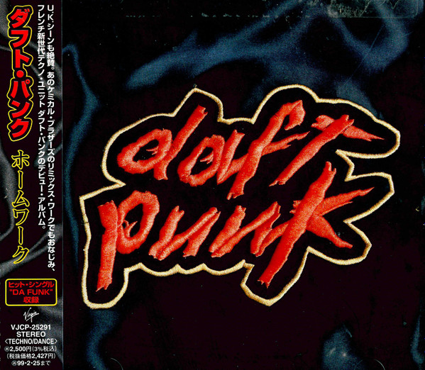
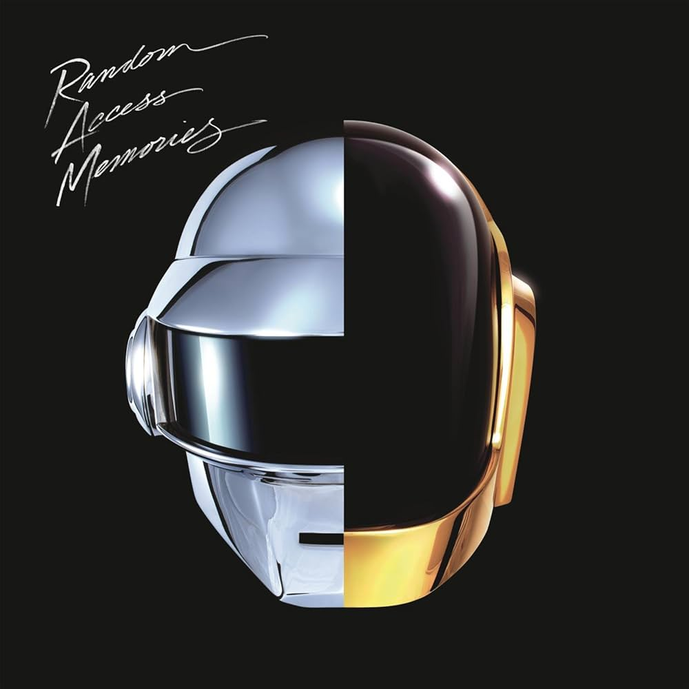
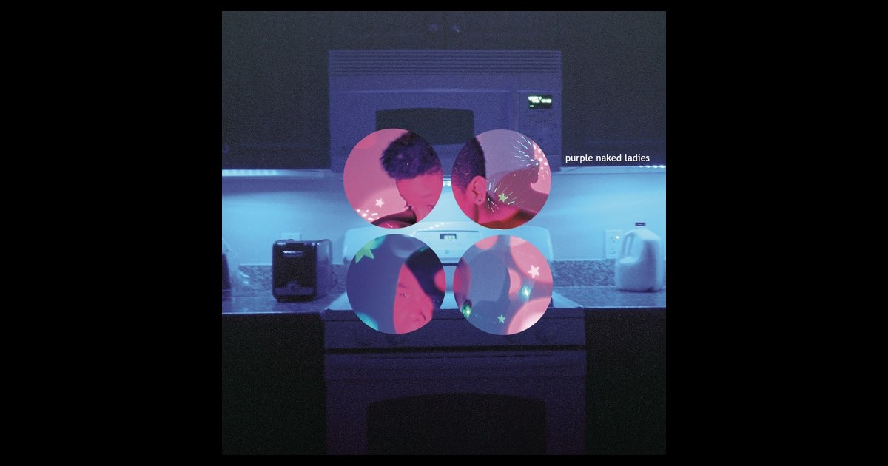
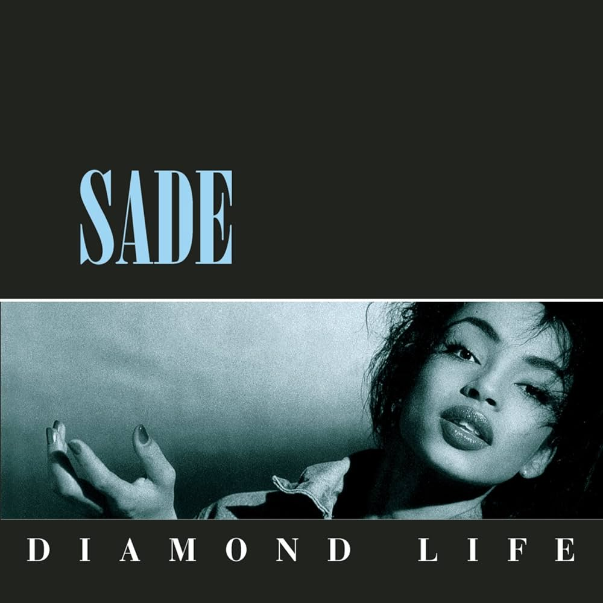
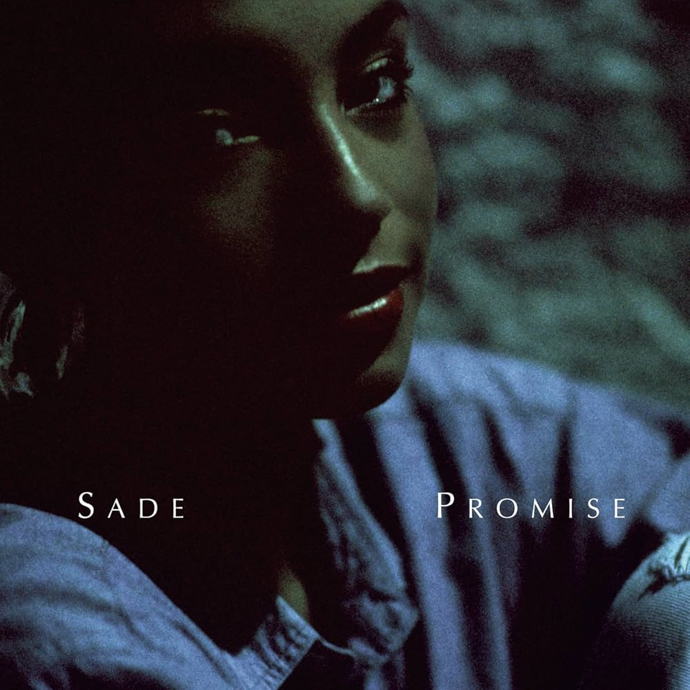

| Album Photo | Album Name | Year | Record Label | Running Time |
|---|---|---|---|---|
|  | Homework | 1997 | Virgin Records | 74:28 |
|
Discovery | 2001 | Virgin Records | 60:49 |
|  | Random Access Memories | 2013 | Columbia Records | 69:06 |
| Note: | Pioneers of the French house music scene and legends of electronic music. | |||
| Album Photo | Album Name | Year | Record Label | Running Time |
|---|---|---|---|---|
|  | Purple Naked Ladies | 2011 | Odd Future Records | 51:30 |
 |
Ego Death | 2015 | Odd Future Records | 49:55 |
| Hive Mind | 2018 | Columbia Records | 42:07 | |
| Note: | Known for their smooth neo-soul, funk, and R&B sound. | |||
| Album Photo | Album Name | Year | Record Label | Running Time |
|---|---|---|---|---|
|  | Diamond Life | 1984 | Epic Records | 45:49 |
|  | Promise | 1985 | Epic Records | 41:59 |
| Lover's Rock | 2000 | Epic Records | 48:54 | |
| Note: | Creators of quiet storm, pioneers of R&B, all led by Sade Adu. | |||